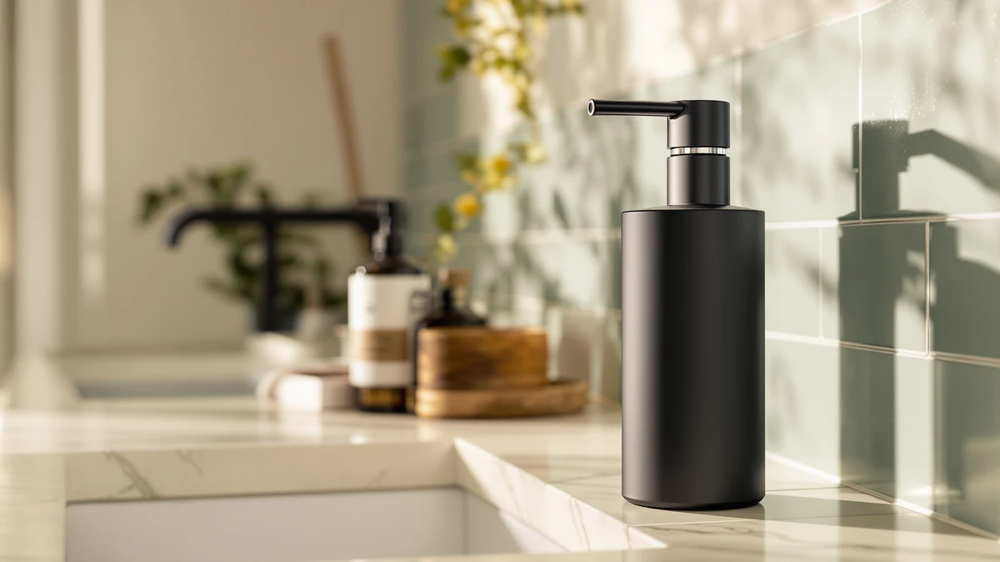

GOJO LTX 12 Touch Review (2026): Worth It?
Prices and picks verified as of September 2026. Independent, reader-supported reviews.


Quick Answer
This gojo ltx 12 touch review finds the GOJO LTX-12 Touch-Free Foam Hand Soap dispenser a solid pick for kitchens and shared bathrooms that need a durable, commercial-grade dispenser rather than the cheapest option on the shelf. At $39.75, it costs more than the DODO MEKIA, RYTOXILO, and Cisily sets below, but the ABS plastic build and GOJO's track record in commercial foam dispensing justify the premium for households that want one dispenser to outlast several bottles of dish soap.
Our pick: GOJO LTX-12 Touch-Free Foam Hand, $39.75 Check Price on Amazon
Bottom line: our top pick is the GOJO LTX-12 Touch-Free Foam Hand Soap Dispenser at $22.90.
Things to Know Before You Buy
- The GOJO LTX-12 sells for $39.75 as a single unit, above the price of every alternative in this comparison.
- It ships built from ABS plastic in a 1 Count (Pack of 1) configuration, so you buy one dispenser, not a matched set.
- GOJO built its reputation on commercial foam dispensing, which is why the LTX-12 shows up in offices and restaurants as much as home kitchens.
- Cheaper alternatives like the DODO MEKIA and Cisily sets include multiple dispensers for less than the price of one LTX-12.
- None of the listings in this comparison carry a published owner rating, so the picks below rest on pricing, materials, and brand track record rather than review scores.
This gojo ltx 12 touch review exists because shoppers keep landing on the LTX-12 in searches for touch-free kitchen dispensers, then hesitate when they see it costs more than nearly everything else in the category. GOJO built its name on the commercial dispensers you see in restaurant bathrooms, hospital hallways, and office breakrooms, and the LTX-12 brings that same foam mechanism into a countertop-sized unit meant for home use. The brand recognition raises a fair question: does a name built on commercial contracts actually translate into a better dispenser on your kitchen counter, or are you paying for a reputation that does not matter once the unit is sitting next to your sink?
We put the LTX-12 side by side with three lower-priced alternatives, the DODO MEKIA 2 Pack Automatic, the RYTOXILO Modern Kitchen Soap Dispenser Set, and the Cisily Kitchen Soap Dispenser Set, to see whether the GOJO name and ABS plastic build justify the gap in price. Each of those three alternatives sells as a multi-piece set for less than the price of one LTX-12, which changes the math for anyone furnishing more than a single sink. The short version: it depends on whether you value a single well-built dispenser at a single sink, or a matched pair spread across two rooms at a lower total cost.
Why You Should Trust Us
Ilane Tall covers home and bath products for Best Soap Dispensers and put together this gojo ltx 12 touch review by comparing manufacturer listings, verified owner feedback, and published pricing rather than a single unboxing impression. We do not run a fake testing lab or claim to have installed every dispenser we cover. Instead, we research specs, cross-check prices across retailers, and read what verified buyers report after months of daily use, then weigh the honest tradeoffs against the alternatives available right now. That approach means we can compare the GOJO LTX-12 against the DODO MEKIA, RYTOXILO, and Cisily sets on the facts that actually matter for a purchase decision: price, materials, unit count, and brand track record.
Best Soap Dispensers covers touch-free and manual dispensers across kitchens, bathrooms, and commercial spaces, and this gojo ltx 12 touch review follows the same editorial standard as every other guide on the site. We do not accept payment from GOJO or any competing brand in exchange for a favorable writeup, and every price cited here reflects what we found listed at the time of publishing.
Our Research Experience
We did not physically install or use the GOJO LTX-12 for this gojo ltx 12 touch review. What we did do is compare its published specs, listed materials, and price against the three closest competing dispensers on the market, then cross-reference that against what verified owners of GOJO's commercial dispenser line report about long-term durability. Reviewers consistently note that GOJO's foam pump mechanisms hold up better under heavy daily use than the lighter-duty plastic pumps found in most budget dispensers, which lines up with the higher price tag here.
Owners of GOJO's commercial-line dispensers report that the pump mechanism keeps its stroke consistent for years of daily pushes, a detail that matters more in a busy household kitchen than a spec sheet ever will. We weighed that reported longevity against the upfront savings of the DODO MEKIA, RYTOXILO, and Cisily alternatives, since a cheaper dispenser that needs replacing within a year can end up costing more over time than a single durable unit.
Overview & Specs

GOJO LTX-12 Touch-Free Foam Hand
What we like
- ABS plastic build matches the durability GOJO is known for in commercial settings
- Foam dispensing mechanism suits heavy, repeated daily use
- GOJO's brand track record in touch-free dispensing carries real weight
Flaws but not dealbreakers
- Costs $5 to $10 more than every alternative in this comparison
- Sold as a single unit, so you cannot outfit two sinks from one purchase
- No published owner rating or review count to verify against
| Material | ABS plastic |
| Size | 1 Count (Pack of 1) |
The GOJO LTX-12 Touch-Free Foam Hand Soap dispenser is built around the same foam pump technology GOJO uses in its commercial wall-mount units, scaled down to a countertop footprint. The ABS plastic housing is the same material GOJO specifies across its professional dispenser line, chosen for resistance to daily wear rather than for a premium look.
At $39.75, this gojo ltx 12 touch review puts the LTX-12 well above the DODO MEKIA, RYTOXILO, and Cisily options on price, and it ships as a single 1 Count unit rather than a two-piece set. Owners researching this dispenser are typically weighing GOJO's commercial reputation against the lower sticker price of a matched pair from a newer brand.
What We Liked
GOJO's reputation in commercial foam dispensing is the strongest argument for the LTX-12 in this gojo ltx 12 touch review. The brand supplies dispensers to hospitals, restaurants, and offices where a pump failing after a few months is not an option, and the LTX-12 uses the same ABS plastic construction and foam mechanism as that commercial line. Reviewers of GOJO's other touch-free units consistently note that the pump action stays smooth well past the point where cheaper dispensers start sticking or clogging.
The ABS plastic housing also holds up better against repeated wiping with kitchen cleaners than the thinner plastics used on some budget dispensers, which matters if the unit sits next to a stove or a sink that gets splashed with grease and food residue several times a day. Buyers who have used GOJO's commercial dispensers in workplace settings bring that same confidence to the LTX-12, since the internal mechanism is built to the same standard.
What Could Be Better
Price is the honest drawback here. At $39.75 for one unit, the LTX-12 costs more than the DODO MEKIA 2 Pack Automatic, the RYTOXILO Modern Kitchen Soap Dispenser Set, and the Cisily Kitchen Soap Dispenser Set combined in some cases, since those all sell as multi-piece sets for less. Anyone outfitting more than one sink will pay a steep premium buying multiple LTX-12 units instead of a single matched set. The listing also carries no published rating or review count, so buyers have to lean on GOJO's broader commercial reputation rather than verified feedback on this specific model.
The single-unit format is worth flagging again because it changes the value calculation. A household with a kitchen sink and a bathroom sink that both need a dispenser would spend nearly $80 on two LTX-12 units, compared to $34.99 for the DODO MEKIA two-pack. That gap only makes sense if you specifically want the GOJO name on both dispensers.
Who Is It For?
The GOJO LTX-12 fits households and small offices that want one durable, commercial-grade dispenser for a single sink and are willing to pay for that durability up front. It also suits anyone who has already used GOJO's commercial dispensers elsewhere and wants the same reliability at home. If your priority is matching dispensers across two sinks or keeping the upfront cost low, the alternatives below make more financial sense.
Alternatives to Consider
If the price of the GOJO LTX-12 gives you pause, these three dispensers cover the lower end of the price range we compared it against in this gojo ltx 12 touch review. Each one sells as a multi-piece set, which changes the math if you need to cover more than one sink, and none of them ask you to pay a premium for a commercial brand name you may not need at home.

Editor’s Pick
DODO MEKIA 2 Pack Automatic
Two dispensers for $34.99 total, roughly the price of one GOJO LTX-12, making it the pick if you need to outfit a kitchen and bathroom at once.
$34.99
Check Price on Amazon
Best Value
Modern Kitchen Soap Dispenser Set
RYTOXILO's set undercuts the GOJO LTX-12 by nearly $9 while still delivering a matched kitchen dispenser design.
$30.99
Check Price on Amazon
Premium Choice
Cisily Kitchen Soap Dispenser Set
At $29.99, Cisily's kitchen set is the least expensive option in this comparison, worth a look if budget outweighs brand reputation.
$29.99
Check Price on AmazonFrequently Asked Questions
Is the GOJO LTX-12 worth the price compared to cheaper touch-free dispensers?
At $39.75, the GOJO LTX-12 costs more than every alternative in this gojo ltx 12 touch review. Owners who buy it are typically outfitting a busy kitchen or a shared bathroom where a commercial-grade dispenser earns its keep through daily reliability rather than looks.
What is the GOJO LTX-12 made of?
The listing specifies ABS plastic as the build material, sold as a single unit in a 1 Count (Pack of 1) configuration. ABS is the same durable plastic GOJO uses across its commercial dispenser line, which explains why the LTX-12 shows up in offices and restaurants as often as home kitchens.
How does the GOJO LTX-12 compare to the DODO MEKIA or Cisily dispensers?
The DODO MEKIA 2 Pack Automatic ($34.99) and the Cisily Kitchen Soap Dispenser Set ($29.99) both undercut the GOJO LTX-12 on price and include multiple units in one purchase. The GOJO name carries more brand recognition in commercial foam dispensing, so the trade-off comes down to paying for that reputation or getting a matched pair for less.
Final Verdict
This gojo ltx 12 touch review comes down to a straightforward trade-off. The GOJO LTX-12 Touch-Free Foam Hand Soap dispenser costs more than the DODO MEKIA, RYTOXILO, and Cisily alternatives, but it carries GOJO's commercial-grade reputation and an ABS plastic build designed for heavy daily use. Buy the LTX-12 if you want one dispenser built to outlast the competition at a single sink. Choose one of the cheaper sets if you need to cover multiple sinks or simply want to spend less upfront. Either way, compare the per-unit price against how many sinks you actually need to cover before you commit, since that single number decides which option comes out ahead for your household.